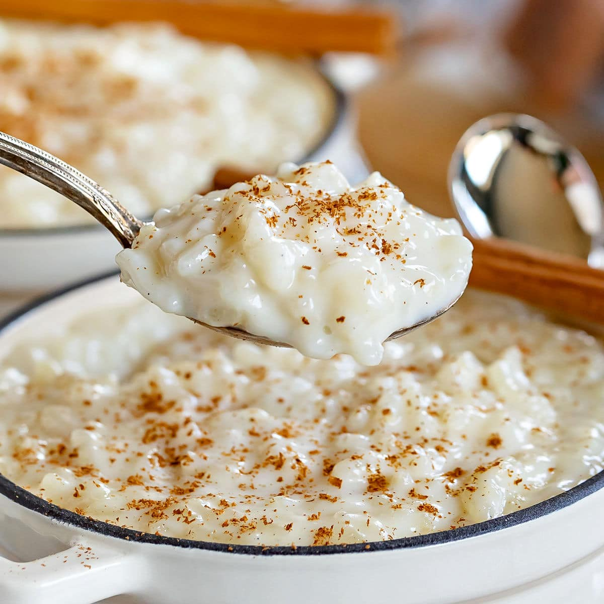

Recipe: Rice Pudding

Description
A pudding, made with rice and milk.
Ingredients
- 3/4 cup uncooked white rice
- 2 cups milk, divided
- 1/3 cup white sugar
- 1/4 teaspoon salt
- 1 egg beaten
- 1 tablespoon butter
- 1/2 teaspoon vanilla extract
Steps
- Bring 1 1/2 cups water to a boil in a saucepan.
- Stir rice into boiling water.
- Reduce heat to low, cover, and simmer for 20 minutes.
- In a clean saucepan, combine 1 1/2 cups cooked rice,
1 1/2 cups milk, sugar and salt.
- Cook over medium heat until thick and creamy, 15 to
20 minutes.
- Stir in remaining 1/2 cup milk, beaten egg, and raisins.
- Cook 2 minutes more, stirring constantly.
- Remove from heat and stir in butter and vanilla.